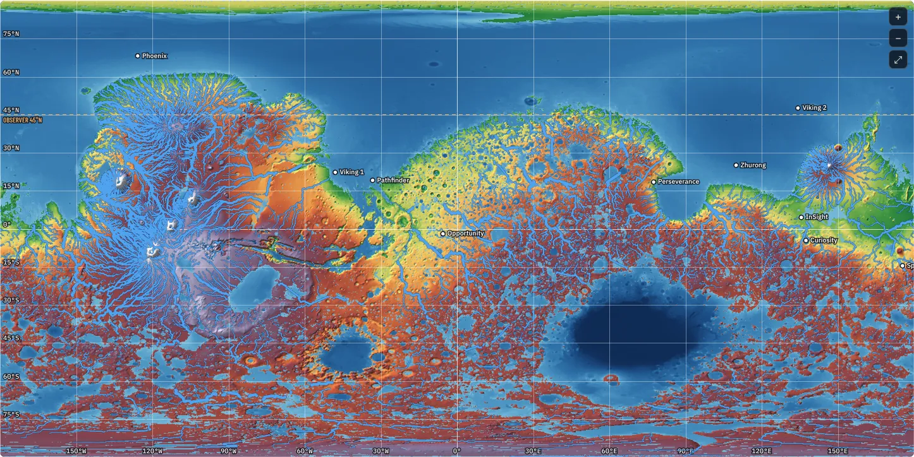
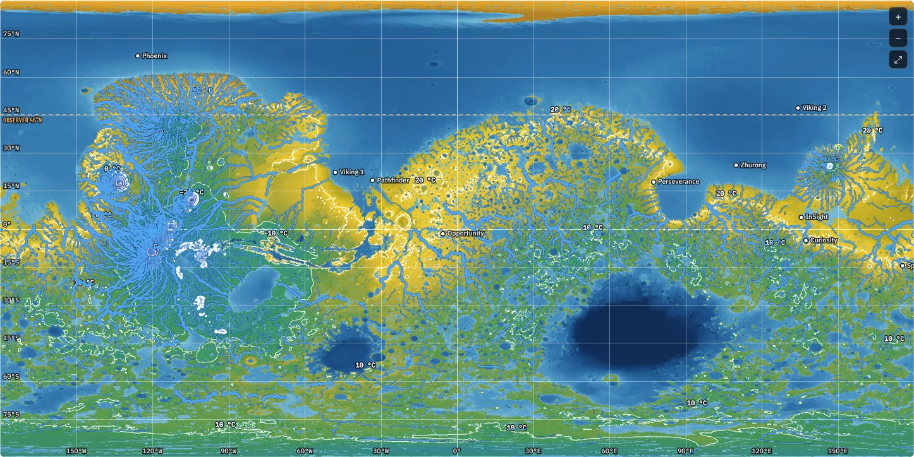
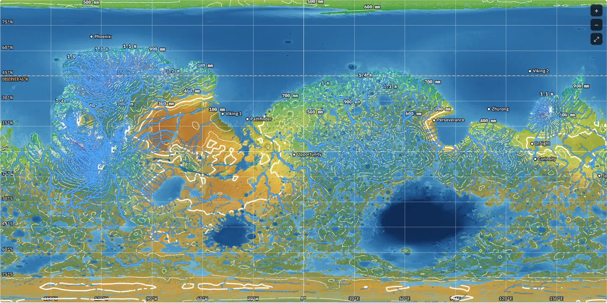
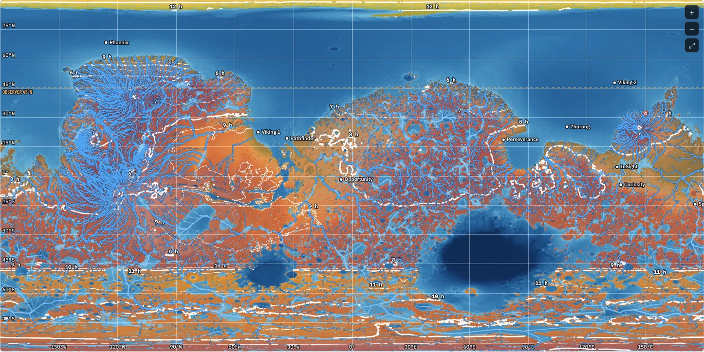
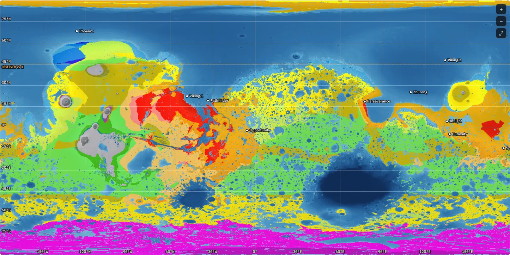
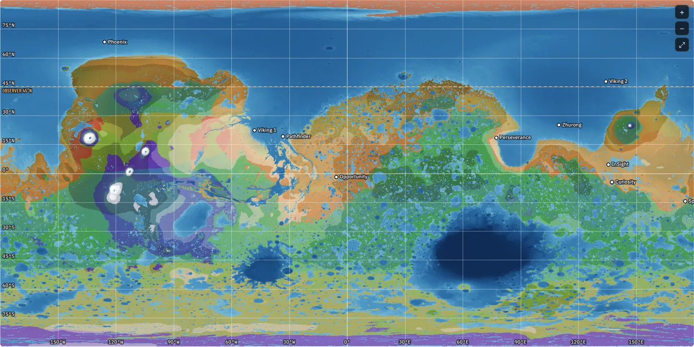
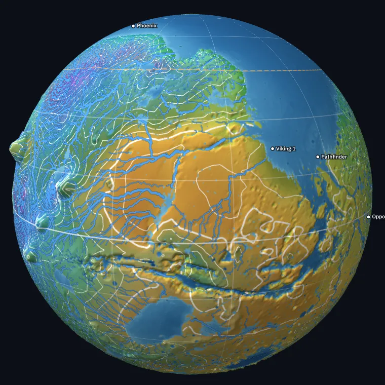

490–713 W/m²
A lopsided orbit
Mars's distance from the Sun runs from 1.38 to 1.67 AU, so its sunlight swings by 45% over the year; Earth's swings by 7%. Because the mirrors share Mars's distance from the Sun, their light swings with it.
Guide · the default three-sun world
The Mars Insolation Project imagines Mars after terraforming: Earth-like air at 1.05 atm, an ocean in the northern lowlands, seas in Hellas and Argyre, lakes in thousands of craters, and two giant mirror arrays that add their light to the Sun's. The simulator works out that world's days, sunlight, temperatures, rain, rivers and seasons. This guide sets out every choice behind its default world and why it was made, then how the model computes each step.
Part I
Every default in the simulator is a decision. Each section here opens with the decision itself: what was chosen, the reason, and what it was chosen over. The reasoning follows. Everything goes back to one goal, set out first.
Today Mars is a frozen desert under a thin carbon-dioxide atmosphere, about 0.6% of Earth's surface pressure. The project takes three things as given:
The climate is then judged against three comfort targets, all on daily mean temperatures at each place's own height:
Candidate skies were run through the full climate model with the default air, water and lakes, and scored on how many sols they keep inside those ranges with all the mirror light delivered. Among skies that did about equally well, the default favours more rain over land and less arid land, meaning land that gets under 300 mm a year, roughly the edge of dry country. Section 10 shows how the result scores.
The climate models behind every number were built and tested on Earth, fitted to its observed temperatures, winds, rain and lakes, and then run with Mars's orbit, spin, gravity, air and terrain (Part II). They show the climate this sunlight would drive. They are not a weather forecast.
Mars is 1.52 times farther from the Sun than Earth, so it gets 43% of Earth's sunlight: 589 W/m² above the air on average, against 1,361 W/m². Its orbit is also more elongated, with an eccentricity of 0.093 against Earth's 0.017, so its sunlight swings by 45% over the year, from 490 W/m² at aphelion to 713 W/m² at perihelion.
The three suns raise the yearly average to 1,456 W/m². The chart shows where that light lands. The Sun alone gives the familiar pattern, strongest at the equator and weakest at the poles. L5 adds most of its light away from the latitudes the Sun already heats, so that between 45°S and 45°N the Sun and L5 together give a nearly even 295–335 W/m². Beyond about 50° L4 adds a ring of extra light, peaking near 590 W/m² around 60°N and 500 W/m² around 55°S.
Why so much light at high latitudes? The goal is temperature, not an even light map. High latitudes lose most of their light for months in winter, the slanting light crosses more air and cloud, and the winds carry heat away toward the poles. To end up only a little cooler than the tropics, they need more light over a year. Earth shows the opposite extreme: its equator gets 2.4 times what its poles get, which is why its poles are icy.
L4 and L5 are two of the five Lagrange points of the Sun–Mars pair. Each forms an equilateral triangle with the Sun and Mars. An object placed there keeps its place relative to both, and the points are stable: a small drift does not grow. Mars already has a few Trojan asteroids at these points, such as 5261 Eureka at L5.
The two arrays get different jobs. L5 lights the whole planet with a shaped beam (section 04). L4 lights only the high latitudes (section 05), so the populated band sees just the Sun and L5 and keeps a normal rhythm of days and nights.
In the simulatorSky bar → Three suns. L5 light and L4 light set each array's strength; Shaping switches between the two arrays' settings; Reset returns the whole sky to these defaults.
The beam is dimmest along one line across the planet and brighter toward the north and south. The profile is
light ∝ 1 − k · cos 2(a − p), k = 0.78divided by its own average, so the total is the array's strength for the date. Here a is the latitude as seen from the array, p the latitude of the dimmest line and k the depth of the dip. With k = 0.78 the dimmest line gets 0.36 times the average and the far north and south edges 2.9 times. Section 16 gives the details. The array sent 1.17 times the Sun's light, with k = 0.85, while the model had Earth's greenhouse. With the default 1,000 ppm of CO₂ it uses a shallower lens, which keeps more of its light over the populated band and less at the far edges (section 07).
The dimmest line moves with the seasons:
p = 7.5° + 27.5° · sin(Ls − 8°) + 12° · sin 2(Ls − 54°)It reaches 47°N in northern summer and 13°S at its southernmost, in northern autumn. It follows the latitude where the Sun stands overhead, and in northern summer runs well north of it, so the dimmest part of the beam falls where the Sun is already high and the days are long. The mirror light goes where the Sun is weak: the winter hemisphere and the far summer latitudes. The twice-a-year term lets the two halves of the year differ, because Mars's eccentric orbit makes the southern summer short and hot and the northern summer long and mild.
Its strength follows the year too. The array is built for 1.22 times the Sun's light, which it sends through northern spring and summer; at Ls 180° it sends 90% of that and at Ls 270° 80%, joined by a smooth curve, and turns the rest away into space (section 13). Near perihelion the Sun itself is 45% brighter than near aphelion, and that is when the populated band and the far south would overheat. Trimming L5 then flattens the year: the band's warmest and coldest sols come about 7.5 °C apart, its sols above 30 °C are down to about 4.6 a year, and the far south leaves −20 to 30 °C on about 1.
In the simulatorUnder Shaping → L5: Lens with k = 0.78 and a phase that follows the seasons; the Fine-tune box holds the bias, shift and twice-a-year terms, and the Seasons box its strength over the year.
Inside each cap the light rises from zero at the edge over a 9° ramp and then leans toward the edge rather than the pole (pole lean −0.9), falling to a tenth of its edge value at the pole itself. It peaks around 60° in each hemisphere, over the land around the northern ocean and the southern uplands, and tapers toward poles that are dark half the year anyway.
Four settings, given at Ls 0°, 90°, 180° and 270° and joined by smooth curves, steer it through the year:
| Ls 0° · N spring | Ls 90° · N summer | Ls 180° · N autumn | Ls 270° · N winter | |
|---|---|---|---|---|
| North edge | 51°N | 51°N | 57°N | 50°N |
| South edge | 45°S | 45°S | 69°S | 72°S |
| Aimed north | 100% | 6% | 100% | 31% |
| Strength | 63% | 100% | 52% | 0% |
| Lands in the north / south | 5% / 56% | 38% / 35% | 52% / 0% | off |
| Turned away | 2% | 28% | 0% |
Read across the table, and mind the last two rows, given as shares of L4's peak; the light turned away includes the southern cap's light north of 48°S. In northern spring L4 aims its light north, but the northern cap, at its equinox, can take little of it, and most spills over to the far south's autumn. In northern summer, the long southern winter near aphelion, it aims nearly all of it south, but the far south, much of it in polar night, takes little more than a third; the rest spills north, where it warms the northern ocean and the land beyond 50°N, and 40% of that northward spill is turned away into space. In northern autumn its light lands in the north as aimed. Around perihelion, when Mars is closest to the Sun and the southern summer is at its hottest, it switches off.
No latitude gets more than 10 times the light the array would give it unshaped, and whatever a cap cannot take spills to the other cap: all of what spills south and 60% of what spills north. That spill carries most of L4's light to the far south in its autumn and to the far north in its summer. Turning 40% of the northward spill away keeps the far north from overheating in its late summer without starving the northern ocean, which feeds the rain; turning all of the spill away cooled and dried the planet.
Why the southern cap stops short of 48°S. Whatever the southern cap would send north of 48°S is turned away too, over a 6° ramp, without brightening the rest of the cap. Near its 45° edge the cap's light falls on the lands just south of the populated band and on the watershed of Argyre; without it the far south keeps more of its rain and less of its evaporation, and Argyre fills to its brim and spills north down the Uzboi valley, joining the rivers that run to the ocean. L5 is a touch brighter to make up the warmth (1.22× rather than 1.21×), which keeps the shares of warm, mild and cool land within about a point of what they were.
Why the north edge sits at 50–57°N rather than at the 45° limit: light delivered further poleward meets more cloud, and more of it is reflected back to space, so the same light warms the planet a little less. With the edge beyond 50°N, and the north share set so that the northern cap still gets the light it needs, the populated band runs about 0.4 °C cooler.
L4 also does more for the rain than its share of the light suggests. Its light warms the northern ocean, the main source of the rain, and keeps the far south's lakes, which steady the summers there. Dimming L4 to offset the CO₂ dried the planet and roughened the far south, while dimming L5 by the same warming did neither (section 07).
In the simulatorUnder Shaping → L4: Outer latitudes, Soft edge 9° and Pole lean −0.9. The Seasons box holds the table above, the Spill kept setting and Turned away: south, to 48°S.
Ultraviolet is 8% of sunlight above the air (6.3% UV-A, 1.3% UV-B, 0.5% UV-C). Without it the mirrors' light is 42% visible. Mars's thick air column helps too: under its weak gravity 1.05 atm means 2.77 times Earth's air overhead, which by itself cuts the UV index to 0.54 times.
The swap also warms the climate a little. In the stratosphere, ozone would have absorbed the mirrors' UV-B and UV-C, and air scatters near-ultraviolet light back to space more than visible light. The replacement visible and infrared light mostly reaches the lower air and the ground instead. A simple column model puts the effect at that of 2% more mirror light: about 1.3 °C warmer land and 9% more rain with three suns.
There are side effects. The stratosphere, warmed only by the Sun's ultraviolet, would be colder than Earth's. The mirrors' visible light breaks ozone down without the UV-C that makes it, so the ozone layer could be thinner than assumed. Plants use 400–700 nm and lose nothing they need; skin makes vitamin D from UV-B, which the Sun alone would supply at about a quarter of Earth's tropical UV index.
In the simulatorThe UV-free mirrors switch in the sky bar (on by default). Every insolation view can show All light, Visible or the UV index.
Pressure is the weight of the air overhead. Mars's gravity is 0.38 of Earth's, so 1 atm on Mars takes 2.64 times as much air above each square metre, and 1.05 atm takes 2.77 times. In total that is about 70% of the mass of Earth's atmosphere, spread over a planet with 28% of Earth's surface.
Consequences the simulator includes:
Mars's own carbon dioxide does not disappear when the new air arrives. Today's thin atmosphere holds about 2.5 × 1016 kg of it, and the polar ice, the residual cap and the deposits buried beneath it, about four-fifths as much again. Mixed into the new air, today's atmosphere alone would make about 4,300 ppm, or 7,700 ppm with the polar ice. Rock weathering and a new ocean would take up only part of that within decades, and 7,700 ppm is above the 5,000 ppm set as the limit for an 8-hour working day (indoor air also runs 1,000–2,000 ppm above outdoor air), so most of it has to be removed. The default assumes it is brought down to 1,000 ppm.
Under Mars's air column 1,000 ppm holds as much CO₂ above each square metre as about 2,770 ppm would on Earth. The model's energy balance was fitted to Earth's satellite record of 1985–89, when Earth had about 350 ppm, so the same greenhouse on this Mars corresponds to only 126 ppm. Every bit beyond that adds 5.35 ln(m · c / 350) W/m², with c the CO₂ in ppm and m the air column relative to Earth's (section 18): +6.2 W/m² at 400 ppm, +9.2 at 700 and +11.1 at 1,000.
The mirrors were retuned for it. With Earth's greenhouse L5 sent 1.17 times the Sun's light; with 1,000 ppm it sends up to 1.22 times but turns part of it away near perihelion, in a shallower lens, and L4 sends more light, much of it to the far south's winter (sections 04 and 05). The table shows the default mirrors with other CO₂ levels, each with its lakes rebalanced:
| CO₂, with the default mirrors | 400 ppm | 700 ppm | 1,000 ppm (default) | 1,500 ppm |
|---|---|---|---|---|
| Sea-level average | 24.1 °C | 25.5 °C | 26.4 °C | 27.4 °C |
| Land 45°S–45°N, sols a year below 0 °C / above 30 °C | 0.2 / 0.1 | 0 / 1.9 | 0 / 4.6 | 0 / 9.9 |
| Land north of 45°N, sols a year above 30 °C | 34 | 49 | 66 | 91 |
| Land south of 45°S, sols a year outside −20 to 30 °C | 0 | 0.2 | 1.3 | 5.7 |
| Land averaging under 10 °C / over 20 °C | 12% / 19% | 9% / 26% | 7% / 30% | 6% / 35% |
| Rain over land | 670 mm | 715 mm | 740 mm | 775 mm |
| Land under 300 mm a year | 12% | 10% | 9% | 8% |
At 1,000 ppm frost has left the populated band and heat comes on about 4.6 sols a year, with a warmer sea and more rain than at lower levels; above it the heat grows quickly. A brighter L5 and more CO₂ trade almost one for one: with the earlier lens, 1.15× at 400 ppm gave nearly the same planet as 1.10× at 1,000 (23.8 against 23.7 °C at sea level, with the same rain), so the CO₂ level can be chosen for breathing and the mirrors set to match.
The mirrors' shape was then tuned to warm the cool highlands without adding heat. With the shallower lens and more winter light in the far south, cool and cold land went from 55% to 49% and mild and warm land from 40% to 46%, with the band's hot sols unchanged and less rainy land.
Then some of L5's light went to L4: L5 from 1.10× to 1.08×, L4 from 0.56× to 0.66×. L4's equinox light keeps the northern ocean warm, which brings more rain, and it warms the far south through its autumn and spring, while the band's heat at perihelion comes from the Sun and L5. Mild land went from 24% to 32% and cool land from 41% to 33.5%, with the band's sols above 30 °C going from about 7 to 8. A scan of 42 skies, each with its lakes rebalanced, put this sky on the best edge, the most mild land for the band's hot sols; with more L4 the southern crater lakes begin to dry, and moving L5's dimmest line or L4's light further south dries them outright. That cost fell at the edges: the far north passed 30 °C on about 88 sols a year and the far south on about 19, the surface of the northern ocean reached 31 °C, and Argyre no longer filled.
Last, the arrays were allowed to turn light away. L5 now follows the seasons, sending up to 1.21 times the Sun's light in northern spring and summer and 90% and 80% of that at Ls 180° and 270°, and L4 turns away 40% of what spills north from its southern cap. Mild land rose to 42% and cool land fell to 21%, while the band's sols outside 0–30 °C fell from about 8 to 3.5 a year and its seasons flattened. The far south then left −20 to 30 °C on about 3 sols a year and the far north passed 30 °C on about 58; Hellas stayed full, Argyre filled to 4.1 km and the northern ocean stayed within 20–30 °C.
Finally L4 turns away whatever its southern cap would get north of 48°S, and L5 rises from 1.21× to 1.22× to make up the warmth (section 05). Argyre fills to its brim and spills north down the Uzboi, and the shares of land barely move: warm 25% to 24.5%, mild 42.5% to 41.5%, cool 21% to 21.5%, hot 4% to 5.4%. The band's hot sols go from about 3.5 to 4.6 a year and the far north's from 58 to 66, while the far south leaves −20 to 30 °C on only about 1.3; the rain rises a little, to 740 mm, and the water needed to 476 m. Section 10 compares this Warm default with six other climates to choose from.
More CO₂ with L5 dimmed to match even makes the planet a little wetter, because the greenhouse keeps the northern ocean warm through the night and the winter, and the ocean feeds the rain. Dimming L4 instead, the array behind the high latitudes, is the wrong offset: it cools the northern ocean and the far south, and the planet dries out, more so the more CO₂ there is to offset.
Getting thereMars has little nitrogen, so most of this air would have to come from elsewhere; the project takes the air as given. Removing the CO₂ is easiest while the air is still nearly pure CO₂, before the nitrogen and oxygen arrive, or by splitting it into oxygen and carbon (about 9 MJ per kg, returning 0.73 kg of oxygen). Driving it off into space by heating the upper air would remove the wrong gases: near the top of the atmosphere gases separate by weight, and the lighter nitrogen and oxygen escape first.
In the simulatorOn the map, with Show: Insolation-based temperature, rain or climate zones, the Sea-level pressure and CO₂ controls; Heights: Earth-equivalent km for heights.
Only water joined to the northern lowlands stands at sea level: an ocean covering 23.8% of the planet, about 1 km deep on average and 3.8 km at its deepest. Hellas and Argyre, the two giant impact basins of the south, reach below sea level but are walled in, so they are closed seas with their own levels, like the Caspian. Every other closed depression, from large basins to small craters, holds a lake.
How full each lake is comes from its own water balance: it rises until evaporation from its surface equals what flows in, from its catchment, the rain on it and the basins upstream (section 24).

With three suns the result is a wet planet:
Getting there476 m is 69 million km³, about 5% of Earth's oceans. Mars's polar caps hold enough ice for a layer of roughly 20–30 m and more is frozen in the ground; the rest would have to be brought in, for example from icy bodies of the outer solar system. The project takes the water as given.
In the simulatorMap → Water level; Fill craters and closed basins with Lakes: Water balance; Hellas, Argyre: Own level. The readout gives the water needed.
Measured rates for daily means are about 4.5 K/km in the Pyrenees, 5.5 on Mount Washington, from 4.4 in winter to 8.2 in summer in the Alps, and 6.9 in the Ecuadorian Andes. Air at 85% humidity cooling along the moist adiabat gives 5.5–5.7 K/km over a year.
The rate is given per Earth-equivalent km because rising air cools with the drop in pressure, and under Mars gravity pressure drops 0.38 times as fast per km. Each patch of land is cooled from its sea-level temperature by its own height, and so is each lake: Hellas's surface, 4.4 km above the ocean, is about 10 K cooler than the ocean at the same latitude. With 6 rather than 5 K/km the band has slightly fewer hot sols (about 4.5 against 5.5 a year) and a tenth of the land is cool rather than mild; frost is gone either way.
In the simulatorThe Lapse rate slider under the temperature layer's settings.
How the default sky, Warm, does against the targets of section 01, next to the two-sun alternative, at the default air (1,000 ppm of CO₂), sea level and lapse rate:
| Measure | Three suns, Warm (default) | Two suns | Target |
|---|---|---|---|
| Land 45°S–45°N, sols a year below 0 °C | 0 | 6.5 | as few as possible |
| Land 45°S–45°N, sols a year above 30 °C | 4.6 | 46 | as few as possible |
| Ocean north of the equator | 23–30 °C | 10–23 °C | 20–30 °C |
| Land north of 45°N, sols a year above 30 °C | 66 | 0 | within −20 to 30 °C |
| Land south of 45°S, sols a year outside −20 to 30 °C | 1.3 | 198 | within −20 to 30 °C |
| Rain over land | 740 mm | 330 mm | more |
| Land under 300 mm a year | 9% | 66% | less |
| Land share of the surface | 54.5% | 68.7% | |
| Water needed (global layer) | 476 m | 257 m |
Frost has left the populated band, and its few hot sols, about 4.6 a year, fall in the lowlands round the northern ocean near perihelion. The far north is the warm spot: land beyond 45°N passes 30 °C on about 66 sols a year, the price of keeping the northern ocean warm and the populated band mild. The far south leaves −20 to 30 °C on about 1 sol late in its summer, and the northern ocean stays within 23–30 °C.

The simulator offers seven three-sun skies to choose from, each tuned at 1,000 ppm of CO₂ with its own lakes balanced and stored, and all of them habitable. Warm, the default, and Cool are the two gentlest, a step apart in warmth; the others give a hotter, colder, drier, wetter or more seasonal planet. Shares are of the land, and section 28 sets them beside Earth's:
| Climate | Hot / warm / mild | Cool / cold / colder | Rainy / humid / dry / desert | Band sols outside 0–30 °C | Band's yearly range |
|---|---|---|---|---|---|
| Hot | 12.5 / 26.5 / 46% | 10.5 / 3.5 / 1.1% | 21.5 / 41.5 / 30.5 / 6.4% | 12.6 | 8.5 K |
| Warm (default) | 5.4 / 24.5 / 41.5% | 21.5 / 4.9 / 2.2% | 21 / 45 / 30 / 3.7% | 4.6 | 9.5 K |
| Cool | 0.9 / 19.5 / 24% | 42 / 9.4 / 3.9% | 21.5 / 43 / 33 / 2.7% | 0 | 7.9 K |
| Cold | 1.5 / 22.5 / 21% | 29 / 18.5 / 7.3% | 19.5 / 45.5 / 26.5 / 8.4% | 2.5 | 10.5 K |
| Dry | 4.8 / 24 / 44.5% | 20.5 / 4.5 / 2% | 15.5 / 38.5 / 35 / 11% | 5.1 | 9.9 K |
| Wet | 1.6 / 23 / 30.5% | 35 / 6.9 / 3.1% | 25 / 46 / 27 / 1.6% | 0.1 | 7.9 K |
| Seasonal | 1.1 / 24 / 26% | 38.5 / 7.5 / 3.2% | 18 / 45.5 / 31.5 / 4.8% | 10.5 | 13.1 K |
"Colder" is frigid and polar together. The yearly range is the gap between the warmest and coldest sols at each latitude, averaged over the band; the band as a whole varies less, because its two halves peak at different times (about 7.5 °C for Warm).
Warm and Cool share the same gentle year and differ by a step in warmth. Warm turns most of the highlands mild and the lowlands round the ocean warm (66% of the land warm or mild), with about 4.6 hot sols a year in the band and Hellas and Argyre both full; Cool keeps the cool highlands and mild lowlands of the earlier skies (66.5% cool or mild), with no sols outside 0–30 °C in the band, a slightly flatter year and a little less rain (685 mm against 740). Which suits better is a matter of taste. Hot adds hot and warm land and about 13 hot sols a year in the band. Cold has as much warm and mild land as Cool but freezes the far south and the high uplands, turning away L4's spill to the south that keeps the far south mild in the other skies; its far north is hot in late summer (about 90 sols above 30 °C). Dry turns away more of L4's spill to the north, cooling the northern ocean that feeds the rain: rain falls to about 650 mm, dry land reaches 35% and rainy land drops to 15.5%, and Hellas and Argyre settle well below their brims; drying further turns dry land into desert faster than humid land into dry. Wet keeps all of L4's spill: the rainiest planet, with almost no desert and the hottest far north (about 115 sols above 30 °C). Seasonal keeps L5 steady through the year, so the perihelion summer is sharp: the band's yearly range reaches about 13 K, and it has about 10 hot sols a year.
The mirrors behind them, as multiples of the Sun's own light at Mars: L5 at its brightest, with the shares of that it sends at Ls 180° and 270°, and L4 at its brightest, with how much it keeps of the light that one cap cannot take and spills to the other (section 05):
| Climate | L5, the second sun | L4, the supplemental sun |
|---|---|---|
| Hot | 1.31×, dimmed to 85% and 70% | 0.66×, keeping half its northward spill |
| Warm (default) | 1.22×, dimmed to 90% and 80% | 0.66×, keeping 60% of its northward spill, its southern light stopping at 48°S |
| Cool | 1.22×, dimmed to 85% and 70% | 0.60×, keeping all its spill |
| Cold | 1.20×, dimmed to 90% and 80% | 0.70×, keeping 70% of its northward spill and none of its southward |
| Dry | 1.24×, dimmed to 90% and 80% | 0.60×, keeping 40% of its northward spill |
| Wet | 1.22×, dimmed to 85% and 70% | 0.66×, keeping all its spill |
| Seasonal | a steady 1.11× | 0.56×, keeping all its spill |
In the simulatorSky bar → Climate. Changing any mirror setting makes the sky Custom.
The simulator also offers a two-sun sky: one array at L5 sending 1.33 times the Sun's light, which brings Mars's average to about Earth's. Its lens is deeper (k = 1, swinging by ±0.2 over the year), with the dimmest line swinging ±27.5° around 11.5°N. With one beam doing all the shaping, warming the high latitudes enough would overheat the middle, so the compromise leaves the populated band hot (above 30 °C on about 46 sols a year) while the northern ocean averages about 16 °C, 330 mm of rain over land with 66% of the land under 300 mm, the far south outside −20 to 30 °C for more than a quarter of the year, and Hellas shrunk to a lake 1.6 km deep on its floor. That is why the three-sun sky is the default.
In the simulatorThe Temperature panel (temperature by latitude) counts these sols; hover the map for any place's values.
Earth's four seasons work because, in the temperate zones, temperature follows one yearly wave set by the tilt, and the two hemispheres mirror each other. On the three-sun Mars that pattern breaks down. The mirrors were tuned to cancel most of the tilt's seasons, and what is left is the orbit's: 45% more sunlight at perihelion, which L5 trims, and a slow passage through the far side of the orbit. The whole populated band follows that cycle together, gently: its warmest and coolest weeks are only about 7.5 °C apart. The northern half is warmest around Ls 245°, its astronomical winter, and the southern half about 40° later.
So the seasons were found from the climate itself. The model's year was split into parts, with the start chosen so that each part groups the most similar sols of land temperature and rain between 45°S and 45°N (section 26 has the method). Going from four parts to five gains more than going from five to six (with rain counted, nearly twice as much), and every version of the test puts the five boundaries within about 6° of Ls of each other.
| Season | Ls | Sols | What happens |
|---|---|---|---|
| Autumn | 0–65° | 138 | Mild and steady in the band (24–25 °C). The north's rains build while the south dries; autumn in the far south. |
| Winter | 65–129° | 138 | Opens with aphelion (Aphelose 14): steady and mild, about 26 °C in the band. Winter in the far south (about 20 °C, down to 14); the north wet, the southern half of the band at its driest. |
| Spring | 129–206° | 138 | The band's coolest weeks (about 22 °C around Ls 171°, the north down to 20 °C), then the north warms fast. More light than winter, up to a fifth more in its last two months; spring in the far south. |
| Summer | 206–287° | 127 | Holds perihelion. The band at its warmest (about 30 °C in the north, 28 °C in the south), with monsoon rain over the southern half; the north dries in its last month. |
| Estia | 287–360° | 127 | The late, dry summer: the band cools from its peak, the north at its driest, while the far south reaches its hottest, about 37 °C. The south stays wet. |
Temperatures are sea-level-equivalent land averages; the ground is cooler by about 2.3 K per km of height. The two halves of the band share the temperature seasons but not the rain: the north gets its rain in the cool months, like a Mediterranean climate, and the south in the warm ones, like a monsoon.
Why is Spring the cold season? The climate lags the light by about a season, because the ocean and the soil store heat. In the band, Autumn gets the least light of the year (about 303 W/m² on average against 364 in Summer) but stays mild on the heat stored through Summer and Estia; the cold arrives in Spring, when the light is already rising again. Spring is still a time of growing light, as on Earth.
Why are Summer and Estia shorter? Near perihelion Mars moves fastest and the climate changes fastest, so a season there needs fewer sols to hold one phase of the weather. The calendar (next section) makes Summer and Estia 127 sols and the other three 138, which fits the populated band's climate as well as equal seasons or slightly better.
Ls 0° is the northern spring equinox. Planetary scientists number Mars years from it: Mars Year 1 began on 11 April 1955 (Clancy et al. 2000), and the Darian calendar also begins its year near it. For this climate it is a good place too: the best five-season split starts within a few degrees of it (Ls 7–9°), so starting the year there, and the first season with it, costs nothing in how well the seasons fit.
A 6-sol week divides both month lengths, so each month begins on the first day of a week. Autumn, Winter and Spring are each 36 + 36 + 36 + 30 = 138 sols; Summer is 36 + 30 + 30 + 30 = 126 sols plus Perihelia, and Estia 126 plus Finalia (and Finalia II in leap years). In all, 111 weeks: 666 sols, plus the festivals.
The festivals sit outside the weeks, like the five or six complementary days at the end of the French Republican calendar or the five epagomenal days of the ancient Egyptian one, so they never break the weekly cycle:
A year has 668 sols, or 669 in a leap year. Odd years and years divisible by 10 are leap years, except centuries not divisible by 500. Over 1,000 years that gives 592 leap years, an average of 668.592 sols, against 668.59 for the real Martian year from one northern spring equinox to the next.
The names are Greco-Latin, so they read the same in any language written in the Latin script. As in the French Republican calendar, each season's months share an ending: -ary in Autumn, -ose in Winter, -al in Spring, -or in Summer and -ival in Estia. Each root describes its month's weather or sky.
| Month | Sols | Days | From Ls | Name from | Weather in the band |
|---|---|---|---|---|---|
| NovaryAutumn | 1–36 | 36 | 0° | novus, new | Mild (25 °C); the far south still hot. The north's rains build. |
| PluviaryAutumn | 37–72 | 36 | 18° | pluvia, rain | The north's rains set in; mild (24 °C). |
| NimbaryAutumn | 73–108 | 36 | 35° | nimbus, rain cloud | Wet and cloudy in the north (23 °C), drier in the south (26 °C). |
| LenaryAutumn | 109–138 | 30 | 52° | lenis, mild | Mild and steady; autumn in the far south. |
| ApheloseWinter | 139–174 | 36 | 65° | aphelion | Aphelion on the 14th. Mild (26 °C); the far south cooling fast. |
| UmbroseWinter | 175–210 | 36 | 81° | umbra, shade | Quiet; the northern summer solstice on the 20th. Far south 22 °C. |
| FrigoseWinter | 211–246 | 36 | 98° | frigus, cold | The far south's winter (18 °C); the southern band dry. |
| BrumoseWinter | 247–276 | 30 | 114° | bruma, midwinter | The far south at its coldest (15 °C); the band 25 °C. |
| VertalSpring | 277–312 | 36 | 129° | vertere, to turn | The north turns cool (21 °C); the band 24 °C. |
| PruinalSpring | 313–348 | 36 | 147° | pruina, hoarfrost | The north's coolest month (20 °C); the band 23 °C. |
| EquinalSpring | 349–384 | 36 | 167° | the equinox | The equinox on the 24th. The band's coolest (23 °C); the north's rains return. |
| VernalSpring | 385–414 | 30 | 187° | ver, spring | The north warms fast (25 °C); the southern rains begin. |
| LucidorSummer | 415–450 | 36 | 206° | lux, light | Bright and warming (27 °C, the north 29 °C); wet everywhere. |
| CalidorSummer | 451–481 | 30 + 1 | 228° | calidus, warm | Warm (29 °C); monsoon in the south, rain in the north too. Perihelia on the 31st. |
| HeliodorSummer | 482–511 | 30 | 248° | helios, the Sun | Perihelion on the 5th. The band's warmest (30 °C), the north 31 °C. |
| FervidorSummer | 512–541 | 30 | 268° | fervidus, glowing | Still at its warmest (30 °C); the winter solstice on the 4th. The north drying. |
| TorrivalEstia | 542–577 | 36 | 287° | torrere, to parch | Warm and dry in the north (28 °C); the far south near 35 °C. |
| ArdivalEstia | 578–607 | 30 | 310° | ardere, to burn | Still warm (28 °C); the far south near 35 °C. |
| MitivalEstia | 608–637 | 30 | 327° | mitis, softening | Cooling (27 °C); the far south near its hottest (36 °C). The north's rains start to return. |
| FinivalEstia | 638–668/669 | 30 + 1–2 | 344° | finis, end | Easing (26 °C); the far south at its hottest (37 °C). Finalia on the 31st (and Finalia II in leap years). |
Band temperatures are the month's land average between 45°S and 45°N at sea-level equivalent; "the north" and "the south" are the band's northern and southern halves.
In the simulatorThe date dials show the months on an outer ring, with dots at the festival sols, and the five seasons inside it. Buttons under each dial choose how the date is given: month and day, the sol of the year, Ls, or any mix. The charts still count sols from the northern winter solstice, where the model's year starts (section 14).
The simulator treats each array as a light source with a set strength and shape. Building one is a different matter. These are order-of-magnitude estimates, outside the simulator:
Part II
The simulator computes its world in five stages, each feeding the next. Every model was first built and tested on Earth, with Earth's radius, spin, gravity, air and terrain, and then run with Mars's numbers. This part goes through the stages in order, with their equations and constants.
Mars follows a Keplerian orbit: eccentricity e = 0.0934, semi-major axis a = 1.5237 AU, perihelion at Ls 250.9°, tilt 25.19°. A year is 686.98 Earth days, or 668.6 sols of 88,775 s (24 h 39 m 35 s). The simulator's clocks use Mars hours, a 24th of a sol (1.0275 Earth hours).
For a time t in sols the position comes from Kepler's equation, solved by Newton's method:
M = M₀ + 2π t / 668.6The Sun's declination, the latitude where it stands overhead at noon, is δ = asin(sin 25.19° · sin Ls). Its light above the air is 1,361 W/m² divided by r² (r in AU): 713 W/m² at perihelion, 490 at aphelion.
Insolation is measured at the top of the air, on level ground. For one source with declination δ, a place at latitude φ gets on average over the sol
Q = (S / π) · (H₀ sin φ sin δ + cos φ cos δ sin H₀)where S is the source's light at Mars and H₀ the hour angle of sunset (0 in polar night, π in polar day). Each mirror array is treated as a second source of the same kind:
Daylight runs from the moment the first sun's centre rises above a flat horizon to the moment the last one sets, merging the arcs of all the suns whose light reaches the place: L4 adds no daylight between its two edges. Refraction and terrain are ignored. The peak is the brightest moment of the sol, adding all the suns. The seasonal ratio divides each sol's light by the dimmest sol of the year at the same latitude.
Earth comparison lines on the charts are typical Earth values for the same measure: daily means of 100 and 500 W/m² for mid-latitude winter and summer and 250 and 450 in the tropics; noon peaks of 350 and 1,300 W/m² for mid-latitude winter and summer, 700 for tropical winter and 1,000 at the equator.
Across the disc of Mars it lights, the array's beam goes as
f(a) = 1 − k cos 2(a − p)where a is the angle from the lit disc's east–west centre line. On the ground that centre line is a great circle through the point under the array, tilted with the array's declination, so a equals the real latitude when the array is over the equator. The profile is divided by its average over the disc, N(k, p) = ∫ f(a) cos²a da / (π/2) over −90° to 90° (computed exactly), so the array always delivers its stated strength for the date. That strength can follow the seasons: the set strength times a factor (0–100%) given at Ls 0°, 90°, 180° and 270° and joined by a smooth periodic curve, the rest of the light being turned away. Without a phase the average is 1 − k/2, and k = 1 would leave the centre line dark with the north and south edges at 4 times the average.
The phase and the depth can follow the seasons:
p(Ls) = bias + A sin(Ls − shift) + A₂ sin 2(Ls − s₂)The three-sun defaults are bias 7.5°, A = 27.5°, shift 8°, A₂ = 12°, s₂ = 54°, k = 0.78 with no swing, and a strength of 100%, 100%, 90% and 80%; the two-sun defaults are k = 1 swinging by ±0.2, with the dimmest line swinging ±27.5° (plus ±6.5° twice a year) around 11.5°N.
Of sunlight above the air, 8.0% lies below 400 nm (ultraviolet: 0.5% UV-C, 1.3% UV-B, 6.3% UV-A), 39.0% between 400 and 700 nm (visible) and 53.0% above 700 nm, from the ASTM E-490/G-173 extraterrestrial spectrum. UV-free mirrors reflect none of the first part and 1.087 times as much of the rest, so 42.4% of their light is visible.
The UV index is the clear-sky value at the ground, from Madronich's formula for Earth's air at 1 AU:
UVI = 12.5 · μ2.42 · (Ω / 300 DU)−1.23with μ the cosine of the Sun's zenith angle and Ω the ozone column, taken as Earth's 300 DU. The last two factors are added for Mars: the Sun's distance, and m, the air column relative to Earth's at sea level. The exponent −0.6 reproduces the 6–8% rise of the UV index per km of height measured on Earth. At 1.05 atm, m = 2.77, which alone lowers the index to 0.54 times; on the map it rises about 7% per Earth-equivalent km. Clouds are left out.
The climate effect of UV-free mirrors comes from a simple column model: Earth's ozone layer, Rayleigh scattering for the air column, grey clouds and ground, and a colder stratosphere sending part of its lost heating less back down. It puts the warming at that of 2.0% more mirror light at 1.05 atm (uncertain by about ±0.65%), and the temperature and rain models take it as that.
The temperatures come from a seasonal energy-balance model of the kind climate scientists use for first estimates (Budyko–Sellers type, after North & Coakley 1979). In its simplest form each 2° latitude band has a land box and a sea box, each obeying
C · dT/dt = (1 − α) Q − (A + B T)The heat capacities and exchanges were fitted to Earth's seasons with Earth's real albedo, ice included. On Earth's orbit the model gives a 15 °C global mean, 29 °C at the equator and −7 / 23 °C (January / July) on land at 45°N.
For Mars three things change:
On Earth the formulas give back the calibrated model exactly. The year is periodic, so it is solved harmonic by harmonic (the yearly mean plus five harmonics), exact to well under 0.1 K. The continental, mixed and maritime settings make land 85%, 50% or 15% of every band; the default dynamic setting uses the map's own land and water instead (next section).
The dynamic setting runs the same energy balance on a 4° × 6° latitude–longitude grid with the map's own ocean, seas and lakes:
The wind strength and the east–west mixing were fitted on Earth's land and sea to the January–July temperature range of 23 mid-latitude cities: within 4.3 K RMS (r = 0.89), against 6.8 K with diffusion alone. Cities next to Earth's winter sea ice, like Yakutsk and Fairbanks, are far more extreme than the model, which has no ice. Ocean currents are not modelled as such: the poleward heat transport fitted on Earth includes the oceans' share on average, spread smoothly over land and sea, without gyres, warm boundary currents, upwelling or deep circulation.
The energy balance gives each sol's average. The rise to the afternoon high and the fall to the dawn low come from a linear balance for the ground and the air near it:
C · dT′/dt = η F(t) − λ T′driven by the light of all the suns over the sol, F(t), and solved harmonic by harmonic over the sol. It was fitted to typical daily ranges on Earth's land: desert summer 16 K, continental mid-latitude summer 13 K and winter 9 K, humid tropics 9.5 K, maritime summer 8 K and winter 5.5 K, with the high near 14:30. The fit gives η = 0.59 of the light warming the ground, C = 5.2 × 105 J/m²/K (the soil and the air mixed by day), λ = 49 W/m²/K in dry country and 115 in moist country, and 6.0 K from passing weather added in quadrature, all within about 1 K of those ranges.
Rain comes from a seasonal moisture budget on a 2° grid: water vapour is evaporated, carried by the winds, held back by terrain and rained out. Each of 12 slices of the year is solved as a steady state, twice: the second time with the soil water the first pass leaves. It runs in the background, in about 15 seconds; the default skies' rain is stored in the page.
Each column holds water vapour up to a saturation amount of ρv,sat · RvT² / (LΓ) per metre, which is about 2.6 times Earth's at the same temperature because Mars's air column is deeper. The vapour is carried by low-level, moisture-weighted winds and mixed by eddies.
Across each step in surface height, only the vapour above the higher ground is exchanged, less the height the wind can lift air by (wind speed ÷ buoyancy frequency, after Sheppard). So moist low air rains out on the windward side and high plateaus stay dry.
Rain falls once the column passes 50% of saturation, on a 4.7-day timescale; more where the low-level flow converges (rising air) and much less where it diverges (sinking air, as over Earth's subtropical deserts). Storm tracks add rain where it cools poleward, and air blown up slopes condenses.
The ocean and lakes evaporate by a bulk formula capped by the year's mean net radiation (water stores heat), and not at all while frozen. Land evaporates at a Priestley–Taylor rate, its yearly share set by the Budyko curve in Fu's form (w = 2.6, the global calibration on river runoff of Zhang et al. 2004) from the year's rain and demand. A chosen date interpolates between the slices.

Sunshine is counted as weather stations count it: the time a direct beam of at least 120 W/m² reaches the ground, the World Meteorological Organization's threshold, here from any of the suns. Each beam is dimmed by the air it crosses, with Earth's clear-sky formula 0.7m0.678 (Meinel and Meinel), where m is the air mass along the beam (Kasten and Young) times the air column overhead relative to Earth's at sea level. Under Mars's air column, 2.77 times Earth's at sea level, a low sun does not count: with three suns the land has 16.4 hours of daylight a sol on average but only 13.3 hours in which a clear sky would count as sunny. Terrain hides almost no qualifying sun at the map's 15 km scale and is left out.
Clouds come from Earth. Its observed sunshine (CRU CL 2.0, 1961–90, over all its land) was fitted as a share of the clear-sky hours, month by month, on the month's rain against its potential evaporation, the storm-track strength the rain model uses, the temperature and the Earth-equivalent height. Held out by 60° sectors of longitude, so that each continent is predicted from the others, it explains 72% of the spread in yearly sunshine, to about 0.9 hours a day; it misses most, by an hour or more, in cold overcast lands by subpolar seas and on some humid continental east coasts, places this Mars hardly has. When two or three suns are up at once a broken sky can hide one and not another, so the sky cover at each moment is taken as U-shaped, mostly clear or mostly overcast as surface observations find, with each sun's line of sight blocked independently within it.
With the default sky the land gets 8.4 hours of direct sun a sol on average, 35% of the sol; Earth's land gets 6.8 hours a day, 28%. The spread is narrower too: 80% of the land gets 6.8–9.9 hours, against 4.5–9.2 on Earth, because there is no overcast north and no cloudless subtropical desert. The two run opposite ways with latitude: on Earth the subtropics are sunniest (8.2 hours at 15–30°) and the far north dullest (4.5 hours beyond 60°), while here the far north and south are sunniest (9–10 hours beyond 45°), where L4's light and the long summer days add hours, and the populated band gets 7.7–8.3 hours. A guide, not a forecast: the clouds are Earth's, scaled to this world's rain and warmth.

In the simulatorMap → Insolation → Show: Sunshine, for the year or any date. It is computed from the rain, so the first time it takes about as long.
The rain model was run with Earth's radius, rotation, gravity and topography (ETOPO, 20′). Its constants were fitted with Earth's observed temperatures, winds, vertical motion and sea temperatures (NCEP and OISST long-term means) against observed rain (GPCP) and the natural sizes of Earth's closed-basin lakes; the circulation part was fitted separately to the observed low-level winds and their convergence.
| Region (mm a year) | Model | Observed | Region (mm a year) | Model | Observed |
|---|---|---|---|---|---|
| Western Europe | 980 | ~1,010 | India | 290 | 1,120 |
| Sahara | 100 | 100 | Eastern China | 260 | 1,340 |
| Congo | 1,480 | 1,700 | Eastern US | 450 | 1,320 |
| Amazon | 1,670 | 2,490 | Arabia | 380 | 120 |
| Tibet | 240 | 430 |
The summer monsoons come out far too weak, and Arabia too wet. The model also fills Earth's large closed basins too much: the Caspian, Aral, Balkhash and Tarim basins and the Makgadikgadi pans all come out full, whereas in reality the Caspian covers 371 thousand km², the Aral covered 68 thousand before 1960, and the others are small or dry. Lake Chad comes out about right (28 thousand km² against 20).
What that means for Mars: rain on the southern highlands, which depends on monsoon air from the northern ocean, is probably underestimated, and a full Hellas is the wet end of what is possible. Mars also runs in a regime Earth cannot test directly: in neither default sky are the tropics the warmest latitudes for most of the year, so the air rises at high latitudes and the tropics get their rain from cells crossing the equator rather than from an Earth-like rain belt.
With the default sky the balance fills Hellas and Argyre to their brims, from a dry start as well. Hellas gets about as much rain as it evaporates, as Earth's oceans do at those latitudes; Argyre, further south and hot late in its summer, evaporates about twice its rain, and its catchment brings in the rest with enough to spare that it spills north down the Uzboi. Same fill everywhere replaces the balance with one share of each basin's depth, and sets Hellas and Argyre by hand.
The yearly runoff from the rain model (rain minus land evaporation; on lakes, rain minus lake evaporation) is routed downhill along the steepest descent. Each lake gathers its inflow and passes water on only if its yearly balance is positive, so that it spills; the overflow runs over the rim from the spill point to the first ground that drains away from the lake.
Flows from about 25 m³/s, a sizeable river, can be drawn, far wider than real so they show at the scale of a planet, in eight widths, each for about three times the flow of the one before. River width scales them all, Big rivers against small sets how much wider the largest draw than the smallest, and Smallest drawn leaves out the small ones.
Whole journeys carries every river on across each lake that spills. The streams entering a lake gather towards its middle, as water taking the way farthest from the shore would, and run down its length to the spill point and out over the rim; they are drawn fainter, as straight reaches over the water. So a river runs whole from its source to the ocean, to Hellas or Argyre, or to a lake that does not spill, through every gorge and chain of crater lakes on the way. Broken at lakes ends each river at the shore and starts it again where the lake spills, so the lakes stand out. On land the cell-by-cell course is smoothed between the points where streams meet, which stay put.
The five seasons of section 11 come from a fit, not a guess:
| Seasons | Sols each | Band temperature | Band temperature and rain | All land temperature |
|---|---|---|---|---|
| 2 | 334 | 32% | 30% | 48% |
| 3 | 223 | 51% | 44% | 60% |
| 4 | 167 | 65% | 62% | 71% |
| 5 | 134 | 73% | 73% | 77% |
| 6 | 111 | 78% | 79% | 83% |
| 7 | 95 | 81% | 83% | 87% |
| The calendar's five | 127–138 | 73% | 73% | 77% |
The four astronomical seasons score 49% on band temperature. For five seasons, band temperature with rain and all-land temperature both put the boundaries at Ls 0°, 63°, 125°, 197° and 283°, exactly the calendar's, and band temperature alone puts them 2–6° later. Six seasons capture a little more, but their extra boundary falls in the long, quiet stretch of Autumn and Winter, splitting off the far south's deepest winter from weeks the populated band can barely tell apart. Starting the calendar at Ls 0° and giving the two seasons near perihelion fewer sols keeps the score about the same: slightly higher for the band, slightly lower over all land.
The map can sort every place into a climate zone, two ways: with the Köppen–Geiger classes used for Earth, so this Mars can be compared with places people know, and with Martian zones drawn up for this world, because its climates are built differently from Earth's.
Both work from twelve "months": the twelve slices of the Martian year the rain model already uses, 55.7 sols each. For every map pixel the simulator takes each month's mean temperature, from the dynamic grid cooled by the pixel's height, and its rain. Rain is counted as a rate, in mm per 30.4 Earth days and the year's total per Earth year, so thresholds set for Earth keep their meaning. "Summer" is each place's warmer half-year, since the three-sun seasons do not follow the hemispheres.
The rules follow Peel et al. (2007), with the colours of Beck et al. (2018):

More than half the land is temperate (C, 59%): oceanic Cfb over the southern highlands (23%), Mediterranean Csa around the northern ocean (17%) and the cooler Csb (10%). Over a quarter is arid (B, 29%), the steppes and deserts of Arabia, Chryse, Xanthe and Elysium. Little is cold (D, 4%), mostly dry-summer Dsa in the far south, and the volcano tops are polar (E, 2.4%). There are few tropical climates (5%): most land stands high (half of it more than 4.3 km above the sea), and even at sea level the band's coolest weeks fall below the 18 °C the A classes need.
Köppen drew his lines from the vegetation of Earth, a planet of extremes, and this Mars was built to avoid them, so the same letters describe gentler places. Its deserts show it best. Classed with the same code (Earth from observed temperatures and rain on a 2.5° grid, without Antarctica), typical values:
| BWh, Mars | BWh, Earth | BWk, Mars | BWk, Earth | |
|---|---|---|---|---|
| Share of the land | 5.6% | 13.7% | 0.6% | 2.1% |
| Rain | 245 mm | 105 mm | 215 mm | 130 mm |
| Land under 100 mm | 0% | 48% | 0% | 33% |
| Months under 5 mm | 1 | 6 | 2 | 5 |
| Warmest / coldest month | 28 / 18 °C | 33 / 15 °C | 25 / 11 °C | 25 / −4 °C |
| Swing over the year | 10 K | 18 K | 14 K | 31 K |
| Latitude | 12° | 24° | 9° | 40° |
A desert here gets rain in almost every month and never less than about 140 mm a year, where a fifth of Earth's deserts get under 50 mm. It has no scorching summer (a fifth of it has a month averaging 30 °C, against four-fifths of Earth's hot deserts) and no cold desert night: the day and night are about 7 K apart, against some 16 K in Earth's desert summers. Measured against its own potential evaporation, about 40% of it is dry rather than desert. Its "cold deserts" are the same mild deserts on high ground near the equator, 3–4 km above the sea, with no frost; only Köppen's line at an 18 °C mean sets them apart. Earth's are continental interiors such as the Gobi and Patagonia, two-thirds of them freezing in winter.
They also lie elsewhere, for another reason. Earth's deserts sit under the sinking air of the subtropics, which covers nine-tenths of its hot deserts and leaves them less than half the water vapour of the wet tropics. Here the rising branch of the circulation stays beyond 55° all year, so the tropics have neither a rain belt nor a desert belt. The deserts are the warm coastal lowlands of Chryse, Xanthe, Amazonis and Elysium. Their air holds as much water vapour as the uplands', or more, but being warm it stays just below the half-saturation at which rain begins, and the same air rains out over the cooler uplands. So rain climbs with the ground, from about 410 mm on the lowest tropical land to over 900 mm above 7 km, whereas Earth's wettest tropical land is its lowest. This does not hang on the rain model's weak point: tripling its monsoon winds, the part the Earth test (section 23) found too weak, leaves the deserts' extent almost unchanged and adds only about a tenth to their rain.
The same is true, more mildly, across the map. Köppen's lines were set at Earth's extremes, and on a planet tuned away from them much of the land sits just across a line, so the letters make it look harsher and more varied than it is. The Martian zones below measure warmth and wetness directly, and the end of this section sets them beside Earth's.
Köppen's thresholds come from Earth, where warmth follows latitude and the seasons follow the hemispheres. Here warmth depends mostly on height, the strongest seasons come from the orbit and from the thin air over Tharsis, and wetness is best measured against the rain model's own potential evaporation rather than Köppen's rule of thumb. The Martian zones are built on those facts: a warmth class from the year's mean temperature at each place, then its wetness, then when its rain comes and how strong its seasons are.
| Part | Meaning | Rule |
|---|---|---|
| H · W · M · K · C · F · P | Hot · warm · mild · cool · cold · frigid · polar | The year's mean temperature: over 25 °C · 20–25 · 15–20 · 10–15 · 5–10 · 0–5 · below 0 °C |
| r · h · d · x | Rainy · humid · dry · desert | The year's rain over its potential evaporation: 1 or more · 0.5–1 · 0.25–0.5 · under 0.25 |
| e · u | Even · uneven rain | Uneven when 60% or more of the year's rain falls in one half of the year. Only for rainy and humid places of the four warmest classes |
| s (in front) | Seasonal | Warmest and coldest months 20 K or more apart. Not for frigid and polar places |
So Khu is cool and humid with uneven rain, sKd cool, dry and seasonal, and Wd warm and dry. The legend sets them out the same way: a block for each warmth class and a row for each wetness, in three columns, even, uneven and seasonal. Dry and desert places, and all cold ones, are not split by when their rain falls, so their chip fills the first two columns; frigid and polar share one block with a column each. Clicking a zone, a row label or a block title highlights it on the map and greys out the rest.

With the default Warm sky the largest class is mild (41.5%): the humid and dry uplands of the populated band and much of the far south (Mhe 11%, Md 9.5%, Mhu 6.5%). The lowlands round the northern ocean are warm (24.5%), from the dry belt of Arabia and Chryse (Wd 8.5%) to humid warm coasts (Whe 7%). A fifth of the land is cool (21.5%), the highest uplands (Khu 5%, Khe 4.5%, Kd 4%), and hot climates are few (5.4%), mostly dry lowlands. 5% is cold, mostly the flanks of Tharsis, and Tharsis itself rises through frigid (1.6%) to polar (0.6%) on its summits. 8.5% of the land is seasonal, mostly the far south, and 21% gets uneven rain. By wetness, 21% of the land is rainy, 45% humid, 30% dry and 3.7% desert.
In the simulatorMap → Insolation → Show: Climate zones, then Köppen–Geiger or Martian zones. Click zones in the legend (or a row or block title) to highlight them on the map, with their total share of the land; Clear shows them all again. The legend lists the zones on the map with their share of the land; hovering gives a place's zone, its months' range of temperature, its rain and how much of it falls in the warmer half.
The Martian zones can be worked out for Earth too, from its observed climate: NCEP temperatures for 1991–2020 brought to each place's height at the same 6 K per km, GPCP rain, and the rain model's own potential evaporation. Set beside the seven skies, they show how differently the two worlds are built. Shares are of the land; Antarctica, 8.7% of Earth's land, is left out of the first row:
| Land | Hot / warm / mild | Cool / cold / colder | Rainy / humid / dry / desert | Seasonal | Mean, °C | Rain, mm |
|---|---|---|---|---|---|---|
| Earth without Antarctica | 18 / 25 / 11% | 7.8 / 9.2 / 29% | 46.5 / 25.5 / 11.5 / 16% | 17.5% | 13.0 | 845 |
| Earth, all its land | 16.5 / 23 / 10% | 7.1 / 8.4 / 35% | 51 / 23.5 / 10.5 / 15% | 16% | 9.1 | 790 |
| Hot | 12.5 / 26.5 / 46% | 10.5 / 3.5 / 1.1% | 21.5 / 41.5 / 30.5 / 6.4% | 6.9% | 19.1 | 790 |
| Warm (default) | 5.4 / 24.5 / 41.5% | 21.5 / 4.9 / 2.2% | 21 / 45 / 30 / 3.7% | 8.5% | 17.2 | 740 |
| Cool | 0.9 / 19.5 / 24% | 42 / 9.4 / 3.9% | 21.5 / 43 / 33 / 2.7% | 7.1% | 14.9 | 685 |
| Cold | 1.5 / 22.5 / 21% | 29 / 18.5 / 7.3% | 19.5 / 45.5 / 26.5 / 8.4% | 4.7% | 14.4 | 665 |
| Dry | 4.8 / 24 / 44.5% | 20.5 / 4.5 / 2% | 15.5 / 38.5 / 35 / 11% | 9.1% | 17.3 | 650 |
| Wet | 1.6 / 23 / 30.5% | 35 / 6.9 / 3.1% | 25 / 46 / 27 / 1.6% | 7.1% | 15.9 | 760 |
| Seasonal | 1.1 / 24 / 26% | 38.5 / 7.5 / 3.2% | 18 / 45.5 / 31.5 / 4.8% | 12% | 15.8 | 670 |
Earth's land sits at the extremes: about a fifth of it is hot and nearly 30% frigid or polar (Siberia, northern Canada, Greenland and the high mountains), which leaves under a fifth mild or cool. Every sky here gathers its land in the middle, 50–66.5% mild or cool, with at most 12.5% hot and at most 7.3% frigid or polar. Even Hot has less hot land than Earth, and Cold, with twice Earth's share of cold land, has a quarter of its frigid and polar land. The share of warm land is the one thing they all have in common with Earth: about a fifth to a quarter in every case.
Earth is split by wetness too: nearly half its land is rainy, from the rainforests to the wet boreal north, a sixth is desert, and only 37% lies between. The skies here put 72–77% of their land in humid or dry, with less rainy land (15.5–25%) and less desert (1.6–11%); Dry comes closest to Earth's deserts and Wet has the fewest. Earth's great continental interiors also make 17.5% of its land seasonal, against 4.7–12% here, with Seasonal the closest. Every sky has warmer land than Earth on average (14.4–19.1 °C against 13.0 °C), a little less rain over it (650–790 mm against 845) and less of it under 300 mm a year (3.6–16.5% against 21%).
The match is close but not exact. Earth's temperatures come from a grid 2.5° across, about 280 km, so the height is taken off a temperature shared by a valley and its mountains; and the potential evaporation, a simple formula of sunlight and temperature, is low over the cold north, so much of Earth's boreal forest counts as rainy where a fuller measure would call it humid. Mars has no great tropical lowland continents, and half its land stands more than 4.3 km above the sea, which is why so little of it is hot.
Part III
Mars looks Earth-like at first glance: a day of almost 24 hours and a similar tilt. The differences behind that resemblance shape every part of the project.
490–713 W/m²
Mars's distance from the Sun runs from 1.38 to 1.67 AU, so its sunlight swings by 45% over the year; Earth's swings by 7%. Because the mirrors share Mars's distance from the Sun, their light swings with it.
193 · 179 · 143 · 154 sols
Northern spring, summer, autumn and winter. Perihelion comes at Ls 251°, just before the northern winter solstice, so the southern summer is short and hot and the southern winter long and cold. The three-sun sky is built around it: L4 switches off at perihelion and sends its light south through the long southern winter. Its climate follows five seasons of its own instead.
Ls 0°–360°
Mars's seasons are counted by the solar longitude, Ls: the angle Mars has moved round the Sun since the northern spring equinox. Ls 90° is the northern summer solstice, 180° the autumn equinox, 270° the winter solstice. Equal steps of Ls take unequal time.
24 h 39 m 35 s
A sol is 2.7% longer than an Earth day. The simulator's clocks use Mars hours, a 24th of a sol (1.0275 Earth hours), on local solar time, so 12:00 is when the Sun crosses the meridian.
668.6 sols
A Martian year lasts 687 Earth days, 1.88 Earth years. Each season lasts about twice as long as on Earth, giving the ground more time to heat up and cool down, and the seasonal heat reaches deeper into the soil.
−51 to +40 min
Because of the eccentric orbit, a Martian sundial runs up to about 50 minutes ahead of or behind a steady clock over the year. On Earth the difference is at most 16 minutes.
0.35°
From Mars the Sun is about two-thirds as wide as from Earth (0.53°) and gives 43% of the light.
05:40 → 23:42
The morning sun at L4 rises 4 Mars hours before the Sun and the evening sun at L5 sets 4 Mars hours after it. At 45°N in northern spring there is light from 05:40 to 23:42. Each array looks at least as wide as the Sun, since it can be no brighter. From the populated band L4 would look dark, its light aimed at the caps.
2 moons
Phobos circles Mars faster than Mars turns, so it rises in the west and sets in the east, twice a sol. Deimos rises in the east and takes about two and a half sols to set. Neither is in the simulator.
5261 Eureka
Mars's Lagrange points already hold a few Trojan asteroids, most of them at L5, the second sun's home.
25.19°
Mars's tilt is close to Earth's 23.44° today, but with no large moon to steady it, it has swung between about 15° and 45° over the last 10 million years. The sky is designed for today's tilt.
2.77× the air
Mars's gravity is 0.38 g, so 1.05 atm needs 2.77 times Earth's air above each square metre. Pressure falls 2.6 times more slowly with height: at the same temperature the air thins by a factor e every 22 km, against 8.4 km on Earth.
× 0.38
Multiplying Mars heights by 0.38 gives the Earth climb with the same drop in pressure. Olympus Mons, 24 km above the sea, thins the air like a 9.2 km climb on Earth, and the highlands at 3.7 km keep 0.89 atm.
2.6× the vapour
The deeper air column holds 2.6 times as much water vapour as Earth's at the same temperature, which matters for how much rain a storm can carry.
0.67× the swing
More air overhead damps the daily cycle: for the same sunlight and humidity, the range between day and night is two-thirds of Earth's. Today's thin Martian air swings by 50–70 K.
UV index 2.5–3.5
The fainter Sun, the heavy air column and UV-free mirrors keep the tropical noon UV index at sea level a quarter of Earth's. Sunscreen is optional; vitamin D comes slowly.
30 km of relief
From the floor of Hellas, about 8 km below the datum, to the top of Olympus Mons, about 21 km above it, Mars's relief spans almost 30 km. Earth's, from the Mariana Trench to Everest, spans 20.
North low, south high
The northern third of Mars lies several kilometres lower than the cratered southern highlands. That is why the ocean fills the north and the south is a high continent dotted with lakes.
+4.4 km
Full Hellas stands 4.4 km above the ocean and is 9.3 km deep, a sea perched on the highlands, like the Caspian lifted onto a plateau. Its water is about 10 K cooler than the ocean at the same latitude.
14% lakes
Besides Hellas and Argyre, crater lakes cover about 14% of Mars. Thousands of old impact craters become lakes, many spilling into the next.
1.4× wider
The tropical circulation cells reach about 1.4 times as far from the equator as Earth's, by the scaling for how far they can extend, which depends on the planet's size, spin and temperature contrasts.
29 °C beyond 60°N
With three suns the land averages about 26 °C over the year (at sea level) from 60°S to 45°N, and the warmest land is the far north, around 29 °C beyond 60°N, where L4's light lands. The tropics are not the warmest latitudes, so they get their rain from circulation cells crossing the equator rather than from an Earth-like tropical rain belt.
No ice caps
With L4 lighting the caps, land north of 45°N never has a sol averaging below −20 °C and land south of 45°S almost never. Winter snow could still fall in places, but away from the highest volcano summits nowhere is cold enough for an ice cap. The model itself has no ice.
Cold spring
The climate lags the light by about a season. The populated band gets the least light in Autumn but stays mild on stored heat, and is coldest in Spring, when the light is already rising.
Part IV
This link opens the simulator with the three-sun sky. Each panel has a Reset button that returns it to the defaults described here, and your settings are kept in your browser.
